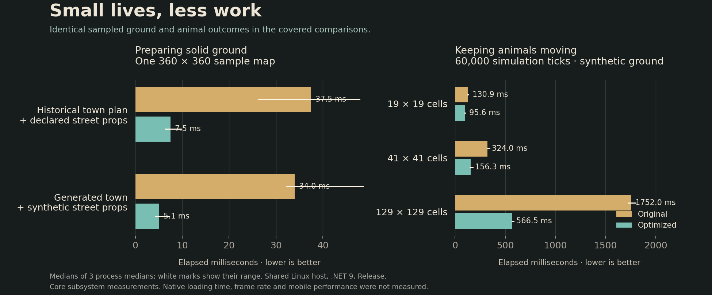

Small lives, less work
25 October 2026 · Day 34
A cat watching a rat and sparrows scattering across the square help a town feel inhabited. This update makes the work underneath those small lives cheaper, while keeping their movements and decisions the same.
The quiet work behind the square
The town's animals need to know where they can stand. Walls, the inn, market furniture and the well all matter. Before an animal takes its first step, the town prepares a fine map of solid ground around the square.
The earlier sampler could ask about each kind of obstacle at every little point. A large patch beneath a building kept asking questions whose answer was already clear. The new sampler marks those solid footprints first, then asks the town's existing collision rules about the remaining ground. The points being sampled and the clearance around masonry stay the same.
A short journey should ask a smaller question
Finding the start of an animal's route used to scan the entire reachable patch, even though the animal could only join a node within two units. It now considers the nearby cells in the same order. A route search stops when it has found the destination's existing path, instead of continuing across the rest of the square. Checking whether a rat has reached cover uses a direct lookup.
The animals still check the ground as they move. A new obstruction can still stop a step. Sparrows keep their flight from nearby people, rats keep their hiding places, and cats keep their short chases.
Keeping the same little lives
The previous implementation remains as a test reference. Both versions receive the same seed, people, changing obstructions and passage of time. Tests compare the complete animal state, including paths and random-generator state, rather than relying on a similar-looking final picture.
The comparison includes disconnected ground, narrow passages, negative coordinates, different window sizes and positions large enough to expose floating-point edge cases. The ground sampler has its own comparison: each sampled bit must agree with the original calculation.
What the measurements show
The collision-map comparison uses a previously captured town plan with declared street props. Preparing its 129,600 samples fell from 37.5 milliseconds to 7.5 milliseconds, while measured managed allocation fell from 37.9 megabytes to 0.13 megabytes. A generated town with additional synthetic props fell from 34.0 milliseconds to 5.1 milliseconds. The fixtures and shared-host limits are recorded with the measurements.
In a synthetic patch with the same 41-cell width as the town's wildlife window, 60,000 complete simulation steps fell from 324.0 milliseconds to 156.3 milliseconds. The same animals reached the same states, with zero managed allocation inside both tick loops. Larger windows benefited more from skipping distant cells.
Each comparison uses three fresh processes, alternating the original and optimized versions. The raw record keeps every sample and the slow outliers. The graph shows the median of the three process medians.

These measurements cover specific engine-free CPU workloads. Complete loading time, frame rate and device performance need separate native measurements. The practical gain is less repeated work beneath the town's existing small lives, with the rules that make them believable kept intact.